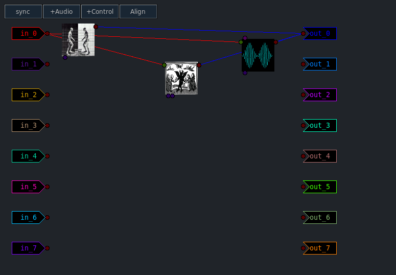

Llia Effects (part 2)
Previous( Effects 1 ) Next( Control Synths ) Home Contents Synth Catalog
Parallel Effects
There is nothing particularly difficult about parallel effects.
- Create two or more effects.
- Create an instrumental synth.
- Send the output of the synth to an audio bus.
- Send the audio bus to each effect input.
Effects in Series
The plot thickens with chains of effects in series.
The order in which synths are created dictates how they may be connected.
Specifically newer synths may serve as inputs to older ones but not the other way around. In other words the final effect in a chain of effects must be created first, the second to last effect must be created second, etc. Finally the instrumental synth which serves as the original input should be the last synth created.
As always there are exceptions. If an instrumental synth uses the Poly1 keymode, it may be used with a chain of effects no matter when it was created. This is due to the nature of Poly1 where no actual synth is created until a note is played. Since playing a note produces a "real" synth on the fly, it is newer then any other synth and can thus serve as input to any synth already in existence. This trick only works with Poly1.
By way of illustration we'll create a proper chain of effects and then rearrange them in an invalid way.
- Restart Llia client application
- From Effects tab select and add the "Tremolo" effect.
- Now add the CarnlDelay effect
- From the Synth tab add an instance of MASA organ.
After some rearranging the Graph window looks like this:
- Create two audio buses.
- Connect MASA output to input of bus A0.
- Connect output of that bus to input of the CarnalDelay effect.
- Connect output of CarnalDelay to input of the other bus.
- Connect output of that bus to the input of the Tremolo effect.
The graph should look something like this:

Below the patch is changed so that the Tremolo comes before the delay, this will not work.

This is one situation where the synth ID is useful. The numeric serial number part of the id indicates the order in which synths were created. Synths with lower serial numbers may not be used anywhere upstream of synths with a higher number.
Previous( Effects 1 ) Next( Control Synths ) Home Contents Synth Catalog